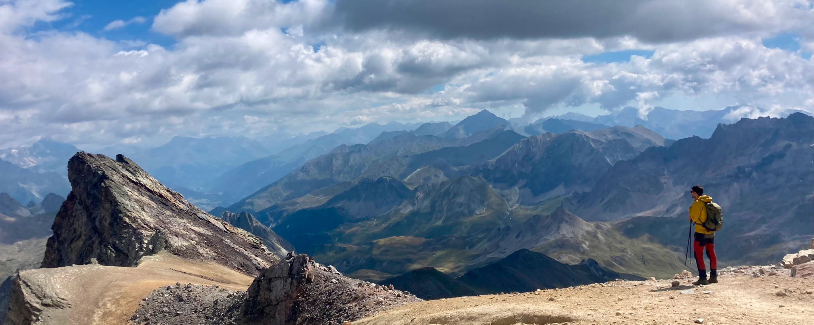

<!DOCTYPE html>
<html lang="en">
<head>
    <meta charset="UTF-8">
    <meta name="viewport" content="width=device-width, initial-scale=0.50, maximum-scale=2.0, minimum-scale=0.50">
    <link rel="stylesheet" href="https://cdnjs.cloudflare.com/ajax/libs/font-awesome/6.7.2/css/all.min.css">
    <title>Nikola Besic - Publications</title>
    <style>
        body {
            margin: 0;
            font-family: Arial, sans-serif;
            display: flex;
            min-height: 100vh;
            background-color: #f4f4f4;
        }
        .sidebar {
            background-color: #048B9A;
            color: #f4f4f4;
            width: 250px;
            height: 100vh;
            padding: 20px;
            box-sizing: border-box;
            display: flex;
            flex-direction: column;
            align-items: center;
            position: fixed;
            top: 0;
            left: 0;
        }
        .sidebar img {
            width: 150px;
            height: 150px;
            border-radius: 50%;
            margin-bottom: 20px;
        }
        .sidebar h1 {
            font-size: 24px;
            margin: 10px 0;
        }
        .sidebar p {
            font-size: 16px;
            text-align: center;
        }
        .sidebar nav a {
            color: #f4f4f4;
            text-decoration: none;
            font-size: 20px;
            margin: 10px 0;
            display: block;
        }
        .sidebar a {
            color: inherit; /* Keep the color same as the parent element */
            text-decoration: none; /* Remove underline */
        }
        .sidebar a:visited {
            color: inherit;
        }
        .sidebar a:hover {
            color: inherit;
        }
        .sidebar a:active {
            color: inherit;
        }
        .sidebar a i {
            color: inherit;
        }
        .content {
            flex: 1;
            padding: 20px;
            box-sizing: border-box;
            margin-left: 250px;
        }
        .content img {
            width: 100%;
            height: auto;
            display: block;
            margin-bottom: 20px;
        }
        .content .publications {
            font-size: 16px;
            line-height: 1.6;
        }
        .circle-list {
            list-style: none; /* Remove default list styling */
            padding: 0; /* Remove default padding */
        }
        .circle-list li {
            position: relative;
            margin: 0 0 10px 30px; /* Add space for the bullet */
            padding-left: 10px;
        }
        .circle-list li:before {
            content: attr(data-index);
            position: absolute;
            left: -30px; /* Position the circle */
            top: 0;
            width: 30px;
            height: 30px;
            border-radius: 50%; /* Make it a circle */
            background-color: #DFAF2C; /* Circle background color */
            color: #fff; /* Number color */
            display: flex;
            align-items: center;
            justify-content: center;
            font-weight: bold;
        }
    </style>
</head>
<body>
    <div class="sidebar">
        
        <h1>Nikola Besic &nbsp <a href="https://orcid.org/0000-0002-2597-4042" target="_blank"><i class="fab fa-orcid" style="font-size:24px"></i></a></h1>
        <p style="margin: 5px;">Researcher in environmental remote sensing and spatial modeling</p>
        <p style="margin: 5px;">@Laboratoire d'Inventaire Forestier (LIF), Géodata Paris - IGN</p>
        <nav>
            <a href="index.html">Home</a>
            <!--<a href="research.html">Research</a>-->
            <a href="publications.html">Publications</a>
            <a href="contact.html">Contact</a>
        </nav>
        <p>
            <a href="https://scholar.google.fr/citations?user=gztS0AIAAAAJ&hl=fr" target="_blank"><i class="fa fa-graduation-cap" style="font-size:36px"></i></a> &nbsp
            <a href="https://linkedin.com/in/nikola-besic" target="_blank"><i class="fab fa-linkedin" style="font-size:36px"></i></a> &nbsp
            <a href="https://www.researchgate.net/profile/Nikola-Besic" target="_blank"><i class="fab fa-researchgate" style="font-size:36px"></i></a> &nbsp
            <a href="https://bsky.app/profile/nikobesic.bsky.social" target="_blank"><i class="fab fa-square-bluesky" style="font-size:36px"></i></a>
        </p>
        <p style="margin: 5px;"><i>"Tant il est peu et de réussites faciles, et d'échecs définitifs." <br> (M. Proust)</i></p>
    </div>
    <div class="content">
        <div class="publications">
            <h2 style="color:#DFAF2C";> Here are the most important publications I have worked on <i class="fas fa-file-alt"></i>: </h2>
        </div>
        
        <div class="publications">
            <ol id="reversed-list" class="circle-list">
                <li><i style="color:#048B9A";>[PREPRINT]</i> <span style="color:#909090";>M. Schwartz, F. Fogel, <b>N. Besic</b>, D. Robert, L. Geist, J.-P. Renaud, J.-M. Monnet, C. Mosig, C. Vega, A. d’Aspremont,
                    L. Landrieu, and P. Ciais, “Formspot: A decade of tree-level, country-scale forest monitoring,” arXiv (undergoing review at <i>Remote Sensing of
                    Environment</i>), 2025. DOI: <a href="https://doi.org/10.48550/arXiv.2512.17021" target="_blank">10.48550/arXiv.2512.17021</a>.</span><br>
                    <i style="color:#048B9A";>Open access (pdf <i class="fa-solid fa-arrow-right"></i> DOI link)</i>
                </li>
                <li><i style="color:#048B9A";>[PREPRINT]</i> <span style="color:#909090";>Y. Su, <b>N. Besic</b>, X. Zhang, Y. Xu, S. Francini, G. D'Amico, G. Chirici, M. Schwartz, I. Fayad, S. Brood,
                    A. Pellissier-Tanon, K. Yu, H. Chen, S. Chen, A. d'Aspremont, and P. Ciais, 
                    “A fused canopy height map of Italy (2004–2024) from spaceborne and airborne LiDAR, and Landsat via deep learning and Bayesian averaging,” <i>Earth Syst. Sci. Data Discuss.</i>, 2025. 
                    DOI: <a href="https://doi.org/10.5194/essd-2025-378" target="_blank">10.5194/essd-2025-378</a>. (undergoing review)</span><br>
                    <i style="color:#048B9A";>Open access (pdf <i class="fa-solid fa-arrow-right"></i> DOI link)</i>
                </li>
                <li><i style="color:#048B9A";>[PREPRINT]</i> <span style="color:#909090";>H. E. Cuny, J.-D. Bontemps, <b>N. Besic</b>, A. Colin, L. Hertzog, A. Le Squin, W. Marchand, C. Vega, and J.-M. Leban, 
                    “Wood density variation in European forest species: drivers and implications for multiscale biomass and carbon assessment in France,” <i>EGUsphere (Biogeosciences)</i>, 2025. 
                    DOI: <a href="https://doi.org/10.5194/egusphere-2025-4152" target="_blank">10.5194/egusphere-2025-4152</a>. (undergoing review)</span><br>
                    <i style="color:#048B9A";>Open access (pdf <i class="fa-solid fa-arrow-right"></i> DOI link)</i>
                </li>
                <li>N. Picard, <b>N. Besic</b>, M. Meliho, F. Mortier, J. Sainte-Marie, and M. Legay,
                    “Bayesian model averaging of climate-dependent forest models using Expectation-Maximization,” 
                    <i>Ecological modelling</i>, Volume 510, 2025. DOI: <a href="https://doi.org/10.1016/j.ecolmodel.2025.111355" 
                    target="_blank">10.1016/j.ecolmodel.2025.111355</a>.<br>
                    <i style="color:#048B9A";>Still under embargo, but the preprint PDF is available on request, so just drop me a message!</i>
                </li>
                <li>M. Schwartz, P. Ciais, E. Sean, A. de Truchis, C. Vega, <b>N. Besic</b>, I. Fayad, J.-P. Wigneron, S. Brood, A. Pelissier-Tanona, J. Pauls, G. Belouze, and Y. Xu,
                    “Retrieving yearly forest growth from satellite data: A deep learning based approach,” 
                    <i>Remote Sensing of Environment</i>, Volume 330, 2025. DOI: <a href="https://doi.org/10.1016/j.rse.2025.114959" 
                    target="_blank">10.1016/j.rse.2025.114959</a>.<br>
                    <i style="color:#048B9A";>Open access (pdf <i class="fa-solid fa-arrow-right"></i> DOI link)</i>
                </li>
                <li>P. Ciais, C. Zhou, P. Schneider, M. Schwartz, <b>N. Besic</b>, C. Vega, and J. Bontemps, “An outlook on the rapid decline
                    of carbon sequestration in french forests and associated reporting needs,” <i>Comptes Rendus. Géoscience</i>, vol. 358, pp. 27–49, 2025. 
                    DOI: <a href="https://doi.org/10.5802/crgeos.309" target="_blank">10.5802/crgeos.309</a>.<br>
                    <i style="color:#048B9A";>Open access (pdf <i class="fa-solid fa-arrow-right"></i> DOI link)</i>
                </li>
                <li>L.-A. Ramirez Parra, J.-P. Renaud, R. Bindner, T. Cordonnier, L. Hertzog, <b>N. Besic</b>, J.-D. Bontemps, and C. Vega,
                    “Fiabilité des modèles de télédétection établis sur de grands territoires forestiers : une analyse de leur applicabilité à l’échelle locale,” 
                    <i>Revue Forestière Française</i>, 76, 2, 173-185 2025. DOI: <a href=" https://doi.org/10.20870/revforfr.2025.9611" 
                    target="_blank">10.20870/revforfr.2025.9611</a>. (in French)<br>
                    <i style="color:#048B9A";>Open access (pdf <i class="fa-solid fa-arrow-right"></i> DOI link)</i>
                </li>
                <li>G. Destouet, <b>N. Besic</b>, E. Joetzjer, and M. Cuntz,
                    “Turbulent transport extraction in time and frequency and the estimation of eddy fluxes at high resolution,” <i>Atmospheric Measurement Techniques</i>,
                    18, 3193–3215, 2025. DOI: <a href=" https://doi.org/10.5194/amt-18-3193-2025" 
                    target="_blank">10.5194/amt-18-3193-2025</a>.<br>
                    <i style="color:#048B9A";>Open access (pdf <i class="fa-solid fa-arrow-right"></i> DOI link)</i>
                </li>
                <li> Y. Su, M. Schwartz, I. Fayad, M. Garcia, M. Zavala, J. Tijerin-Trivino, J. Astigarraga, V. Cruz-Alonso, S. Liu, X. Zhang,
                    S. Chen, F. Ritter, <b>N. Besic</b>, A. d’Aspremont, and P. Ciais , “Canopy height and biomass distribution across the forests
                    of Iberian peninsula,” <i>Nature Research - Scientific Data</i>, 12, 678, 2025. DOI: <a href="https://doi.org/10.1038/s41597-025-05021-9" target="_blank">10.1038/s41597-025-05021-9</a>.<br>  	
                    <i style="color:#048B9A";>Open access (pdf <i class="fa-solid fa-arrow-right"></i> DOI link)</i>
                </li>
                <li> F. Fogel, Y. Perron, <b>N. Besic</b>, L. Saint-André, A. Pellissier-Tanon, M. Schwartz, T. Boudras,
                    I. Fayad, A. d'Aspremont, L. Landrieu, and P. Ciais, “Open-Canopy: Towards Very High Resolution Forest Monitoring,” 
                    <i>IEEE/CVF Proceedings of the Computer Vision and Pattern Recognition Conference (CVPR)</i>, pp. 1395-1406, 2025. DOI: <a href="https://doi.org/10.1109/CVPR52734.2025.00138" target="_blank">10.1109/CVPR52734.2025.00138</a>.<br> 	
                    <i style="color:#048B9A";>Open access (pdf <i class="fa-solid fa-arrow-right"></i> <a href="https://openaccess.thecvf.com/content/CVPR2025/html/Fogel_Open-Canopy_Towards_Very_High_Resolution_Forest_Monitoring_CVPR_2025_paper.html" target="_blank">CVF link</a>)</i>
                </li>
                <li> <b>N. Besic</b>, N. Picard, C. Vega, J.-D. Bontemps, L. Hertzog, J.-P. Renaud, F. Fogel, M. Schwartz,
                    A. Pellissier-Tanon, G. Destouet, F. Mortier, M. Planells-Rodriguez, and P. Ciais , “Remote sensing-based
                    forest canopy height mapping: some models are useful, but might they provide us with even more insights 
                    when combined?,” <i>Geoscientific Model Development</i>, 18, 337–359, 2025. DOI:
                    <a href="https://doi.org/10.5194/gmd-18-337-2025" target="_blank">10.5194/gmd-18-337-2025</a>.<br>
                    <i style="color:#048B9A";>Open access (pdf <i class="fa-solid fa-arrow-right"></i> DOI link)</i>
                </li>
                <li><b>N. Besic</b>, S. Durrieu, A. Schleich, and C. Vega, “Using structural class pairing to address the spatial mismatch
                    between GEDI measurements and NFI plots,” <i>IEEE Journal of Selected Topics in Applied Earth Observations and
                    Remote Sensing</i>, vol. 17, pp. 12 854–12 867, 2024. DOI: <a href="https://doi.org/10.1109/JSTARS.2024.3425431" 
                    target="_blank">10.1109/JSTARS.2024.3425431</a>.<br>
                    <i style="color:#048B9A";>Open access (pdf <i class="fa-solid fa-arrow-right"></i> DOI link)</i>
                </li>
                
                <li><b>N. Besic</b>, N. Picard, J. Sainte-Marie, M. Meliho, C. Piedallu, and M. Legay, “A novel framework and a new
                    score for the comparative analysis of forest models accounting for the impact of climate change,” <i>Journal
                    of Agricultural, Biological and Environmental Statistics</i>, vol. 29, no. 1, pp. 73–91, 2023.  
                    DOI: <a href="https://doi.org/10.1007/s13253-023-00557-y" target="_blank">10.1007/s13253-023-00557-y</a>.<br>
                    <i style="color:#048B9A";>Postprint available (<a href="https://hal.science/hal-04518775" target="_blank">pdf</a>)</i>
                </li>
                
                <li>J. Gehring, A. Ferrone, A.-C. Billault-Roux, <b>N. Besic</b>, K. D. Ahn, G. Lee, and A. Berne, “Radar and groundlevel
                    measurements of precipitation collected by the École Polytechnique Fédérale de Lausanne during the
                    International Collaborative Experiments for Pyeongchang 2018 Olympic and Paralympic winter games,” <i>Earth
                    System Science Data</i>, vol. 13, no. 2, pp. 417–433, 2021. DOI: <a href="https://doi.org/10.5194/essd-13-417-2021" 
                    target="_blank">10.5194/essd-13-417-2021</a>.<br>
                    <i style="color:#048B9A";>Open access (pdf <i class="fa-solid fa-arrow-right"></i> DOI link)</i>
                </li>
                
                <li>J. Gehring, A. Oertel, É. Vignon, N. Jullien, <b>N. Besic</b>, and A. Berne, “Microphysics and dynamics of snowfall
                    associated with a warm conveyor belt over Korea,” <i>Atmospheric Chemistry and Physics</i>, vol. 20, no. 12, pp. 7373–
                    7392, 2020. DOI: <a href="https://doi.org/10.5194/acp-20-7373-2020" target="_blank">10.5194/acp-20-7373-2020</a>.<br>
                    <i style="color:#048B9A";>Open access (pdf <i class="fa-solid fa-arrow-right"></i> DOI link)</i>
                </li>
                
                <li>A. Sunjerga, M. Rubinstein, N. Pineda, A. Mostajabi, M. Azadifar, D. Romero, O. Van der Velde, J. Montanya,
                    J. Figueras i Ventura, <b>N. Besic</b>, J. Grazioli, A. Hering, U. Germann, G. Diendorfer, and F. Rachidi, “LMA
                    observations of upward lightning flashes at the Säntis tower initiated by nearby lightning activity,” <i>Electric
                    Power Systems Research</i>, vol. 181, p. 106 067, 2020, issn: 0378-7796. DOI: <a href="https://doi.org/10.1016/j.epsr.2019.106067" 
                    target="_blank">10.1016/j.epsr.2019.106067</a>.<br>
                    <i style="color:#048B9A";>Open access (pdf <i class="fa-solid fa-arrow-right"></i> DOI link)</i>
                </li>
                
                <li>J. Figueras i Ventura, N. Pineda, <b>N. Besic</b>, J. Grazioli, A. Hering, O. A. van der Velde, D. Romero, A. Sunjerga,
                    A. Mostajabi, M. Azadifar, M. Rubinstein, J. Montanyà, U. Germann, and F. Rachidi, “Analysis of the lightning
                    production of convective cells,” <i>Atmospheric Measurement Techniques</i>, vol. 12, no. 10, pp. 5573–5591, 2019.
                    DOI: <a href="https://doi.org/10.5194/amt-12-5573-2019" target="_blank">10.5194/amt-12-5573-2019</a>.<br>
                    <i style="color:#048B9A";>Open access (pdf <i class="fa-solid fa-arrow-right"></i> DOI link)</i>
                </li>
                
                <li>J. Figueras i Ventura, N. Pineda, <b>N. Besic</b>, J. Grazioli, A. Hering, O. A. van der Velde, D. Romero, A. Sunjerga, A.
                    Mostajabi, M. Azadifar, M. Rubinstein, J. Montanyà, U. Germann, and F. Rachidi, “Polarimetric radar characteristics
                    of lightning initiation and propagating channels,” <i>Atmospheric Measurement Techniques</i>, vol. 12,
                    no. 5, pp. 2881–2911, 2019. DOI: <a href="https://doi.org/10.5194/amt-12-2881-2019" target="_blank">10.5194/amt-12-2881-2019</a>.<br>
                    <i style="color:#048B9A";>Open access (pdf <i class="fa-solid fa-arrow-right"></i> DOI link)</i>
                </li>
                
                <li>N. Pineda, J. Figueras i Ventura, D. Romero, A. Mostajabi, M. Azadifar, A. Sunjerga, F. Rachidi, M. Rubinstein,
                    J. Montanyà, O. van der Velde, P. Altube, <b>N. Besic</b>, J. Grazioli, U. Germann, and E. R. Williams, “Meteorological
                    aspects of self-initiated upward lightning at the Säntis tower (Switzerland),” <i>Journal of Geophysical Research:
                    Atmospheres</i>, vol. 124, no. 24, pp. 14 162–14 183, 2019. DOI: <a href="https://doi.org/10.1029/2019JD030834"
                    target="_blank">10.1029/2019JD030834</a>.<br>
                    <i style="color:#048B9A";>Open access (pdf <i class="fa-solid fa-arrow-right"></i> DOI link)</i>
                </li>
                
                <li>É.Vignon, <b>N. Besic</b>, N. Jullien, J. Gehring, and A. Berne, “Microphysics of snowfall over coastal East Antarctica
                    simulated by Polar WRF and observed by radar,” <i>Journal of Geophysical Research: Atmospheres</i>, vol. 124, no. 21,
                    pp. 11 452–11 476, 2019. DOI: <a href="https://doi.org/10.1029/2019JD031028"
                    target="_blank">10.1029/2019JD031028</a>.<br>
                    <i style="color:#048B9A";>Open access (pdf <i class="fa-solid fa-arrow-right"></i> DOI link)</i>
                </li>
                
                <li><b>N. Besic</b>, J. Gehring, C. Praz, J. Figueras i Ventura, J. Grazioli, M. Gabella, U. Germann, and A. Berne, “Unraveling
                    hydrometeor mixtures in polarimetric radar measurements,” <i>Atmospheric Measurement Techniques</i>,
                    vol. 11, no. 8, pp. 4847–4866, 2018. DOI: <a href="https://doi.org/10.5194/amt-11-4847-2018"
                    target="_blank">10.5194/amt-11-4847-2018</a>.<br>
                    <i style="color:#048B9A";>Open access (pdf <i class="fa-solid fa-arrow-right"></i> DOI link)</i>
                </li>
                
                <li>F. Gerber, <b>N. Besic</b>, V. Sharma, R. Mott, M. Daniels, M. Gabella, A. Berne, U. Germann, and M. Lehning,
                    “Spatial variability in snowprecipitation and accumulation in COSMO–WRF simulations and radar estimations
                    over complex terrain,” <i>The Cryosphere</i>, vol. 12, no. 10, pp. 3137–3160, 2018. DOI: <a href="https://doi.org/10.5194/tc-12-3137-2018"
                    target="_blank">10.5194/tc-12-3137-2018</a>.<br>
                    <i style="color:#048B9A";>Open access (pdf <i class="fa-solid fa-arrow-right"></i> DOI link)</i>
                </li>
                
                <li>S. Trefalt, A. Martynov, H. Barras, <b>N. Besic</b>, A. Hering, S. Lenggenhager, P. Noti, M. Röthlisberger, S. Schemm,
                    U. Germann, and O. Martius, “A severe hail storm in complex topography in Switzerland - observations and
                    processes,” <i>Atmospheric Research</i>, vol. 209, pp. 76–94, 2018, issn: 0169-8095. DOI: <a href="https://doi.org/10.1016/j.atmosres.2018.03.007"
                    target="_blank">10.1016/j.atmosres.2018.03.007</a>.<br>
                    <i style="color:#048B9A";>Open access (pdf <i class="fa-solid fa-arrow-right"></i> DOI link)</i>
                </li>
                
                <li>D. Nerini, <b>N. Besic</b>, I. Sideris, U. Germann, and L. Foresti, “A non-stationary stochastic ensemble generator
                    for radar rainfall fields based on the short-space Fourier transform,” <i>Hydrology and Earth System Sciences</i>,
                    vol. 21, no. 6, pp. 2777–2797, 2017.  DOI: <a href="https://doi.org/10.5194/hess-21-2777-2017"
                    target="_blank">10.5194/hess-21-2777-2017</a>.<br>
                    <i style="color:#048B9A";>Open access (pdf <i class="fa-solid fa-arrow-right"></i> DOI link)</i>
                </li>
                
                <li><b>N. Besic</b>, J. Figueras i Ventura, J. Grazioli, M. Gabella, U. Germann, and A. Berne, “Hydrometeor classification
                    through statistical clustering of polarimetric radar measurements: a semi-supervised approach,”
                    <i>Atmospheric Measurement Techniques</i>, vol. 9, no. 9, pp. 4425–4445, 2016. DOI: <a href="https://doi.org/10.5194/amt-9-4425-2016"
                    target="_blank">10.5194/amt-9-4425-2016</a>.<br>
                    <i style="color:#048B9A";>Open access (pdf <i class="fa-solid fa-arrow-right"></i> DOI link)</i>
                </li>
                
                <li>L. Pralon, G. Vasile, M. DallaMura, J. Chanussot, and <b>N. Besic</b>, “Evaluation of ICA-based ICTD for PoLSAR data
                    analysis using a sliding window approach: Convergence rate, Gaussian sources, and spatial correlation,” <i>IEEE
                    Transactions on Geoscience and Remote Sensing</i>, vol. 54, no. 7, pp. 4262–4271, 2016. DOI: <a href="https://doi.org/10.1109/TGRS.2016.2538900"
                    target="_blank">10.1109/TGRS.2016.2538900</a>.</li>
                
                <li><b>N. Besic</b>, G. Vasile, J. Chanussot, and S. Stankovic, “Polarimetric incoherent target decomposition by means
                    of independent component analysis,” <i>IEEE Transactions on Geoscience and Remote Sensing</i>, vol. 53, no. 3,
                    pp. 1236–1247, 2015. DOI: <a href="https://doi.org/10.1109/TGRS.2014.2336381" target="_blank">10.1109/TGRS.2014.2336381</a>.<br>
                    <i style="color:#048B9A";>Postprint available (<a href="https://hal.science/hal-01023169" target="_blank">pdf</a>)</i>
                </li>

                <li><b>N. Besic</b>, G. Vasile, J.-P. Dedieu, J. Chanussot, and S. Stankovic, “Stochastic approach in wet snow detection
                    using multitemporal SAR data,” <i>IEEE Geoscience and Remote Sensing Letters</i>, vol. 12, no. 2, pp. 244–248, 2015.
                    DOI: <a href="https://doi.org/10.1109/LGRS.2014.2334355" target="_blank">10.1109/LGRS.2014.2334355</a>.<br>
                    <i style="color:#048B9A";>Postprint available (<a href="https://hal.science/hal-01023156" target="_blank">pdf</a>)</i>
                </li>
                
                <li><b>N. Besic</b>, G. Vasile, A. Anghel, T.-I. Petrut, C. Ioana, S. Stankovic, A. Girard, and G. d’Urso, “Zernike ultrasonic
                    tomography for fluid velocity imaging based on pipeline intrusive time-of-flight measurements,” <i>IEEE
                    Transactions on Ultrasonics, Ferroelectrics, and Frequency Control</i>, vol. 61, no. 11, pp. 1846–1855, 2014. DOI: 
                    <a href="https://doi.org/10.1109/TUFFC.2014.006515" target="_blank">10.1109/TUFFC.2014.006515</a>.<br>
                    <i style="color:#048B9A";>Postprint available (<a href="https://hal.science/hal-01081162" target="_blank">pdf</a>)</i>
                </li>
                
                <li><b>N. Besic</b>, G. Vasile, F. Gottardi, J. Gailhard, A. Girard, and G. d’Urso, “Calibration of a distributed SWE model
                    using MODIS snow cover maps and in situ measurements,” <i>Remote Sensing Letters</i>, vol. 5, no. 3, pp. 230–239,
                    2014. DOI: <a href="https://doi.org/10.1080/2150704X.2014.897399" target="_blank">10.1080/2150704X.2014.897399</a>.<br>
                    <i style="color:#048B9A";>Postprint available (<a href="https://hal.science/hal-00961836" target="_blank">pdf</a>)</i>
                </li>
            </ol>

            <script>
                // JavaScript to reverse the numbers
                const list = document.getElementById('reversed-list');
                const items = list.getElementsByTagName('li');
                const itemCount = items.length;

                for (let i = 0; i < itemCount; i++) {
                    items[i].setAttribute('data-index', itemCount - i);
                }
            </script>
        </div>
    </div>
</body>
</html>
